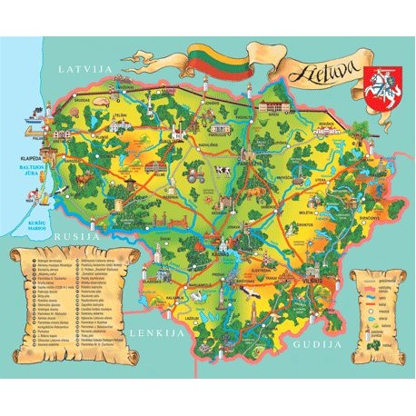

Trumpai apie
Lietuvą
Lietuva – oficialiai vadinama Lietuvos Respublika
– yra demokratinė respublika Baltijos jūros pietrytinėje
pakrantėje.
Dalinama į penkis regionus ir apima 65 300 km² plotą.
Nuo 2004 m. Lietuva yra viena iš Europos Sąjungos valstybių
įeinant į Šengeno erdvę, kurioje nėra pasienio kontrolės.
Nuo 2015 m. valstybė priklauso Euro zonai.
Šalis ribojasi su Latvija (sausumos sienos ilgis – 588 km, jūros
siena – 22 km), Baltarusija (sienos ilgis – 677 km), Lenkija
(sienos ilgis – 104 km), Rusija (Kaliningrado sritis; sausumos
sienos ilgis – 255 km, Kuršių mariomis – 18 km, jūra – 22 km).
Baltijos jūros pakrantės ilgis – 90,66 km. Lietuvos –
Baltarusijos ir Lietuvos – Rusijos Federacijos siena yra ir
Europos Sąjungos siena.
Lietuvos ekonominė zona Baltijos jūroje (vakaruose) siekia
Švedijos ekonominę zoną.
Didžiausias šalies miestas yra sostinė Vilnius.
Kiti didieji miestai: Kaunas, Klaipėda, Šiauliai, Panevėžys.

© Eidenis Kasperavičius „Vaivorykštė“ 2017-2018
Į pradžią